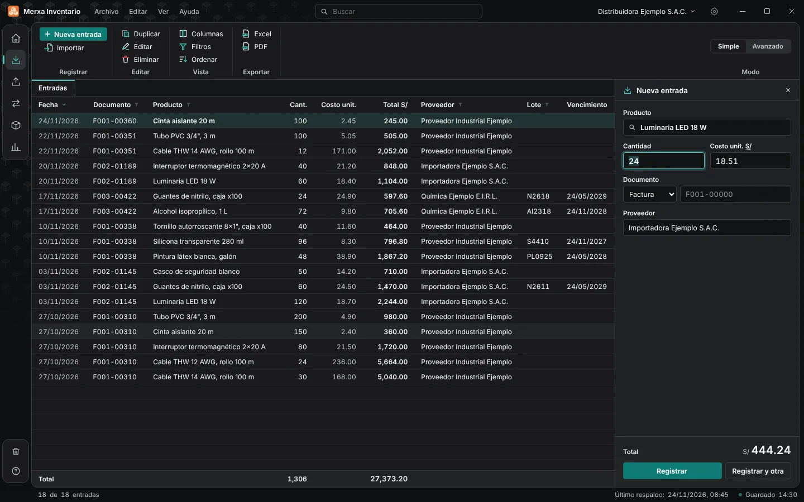
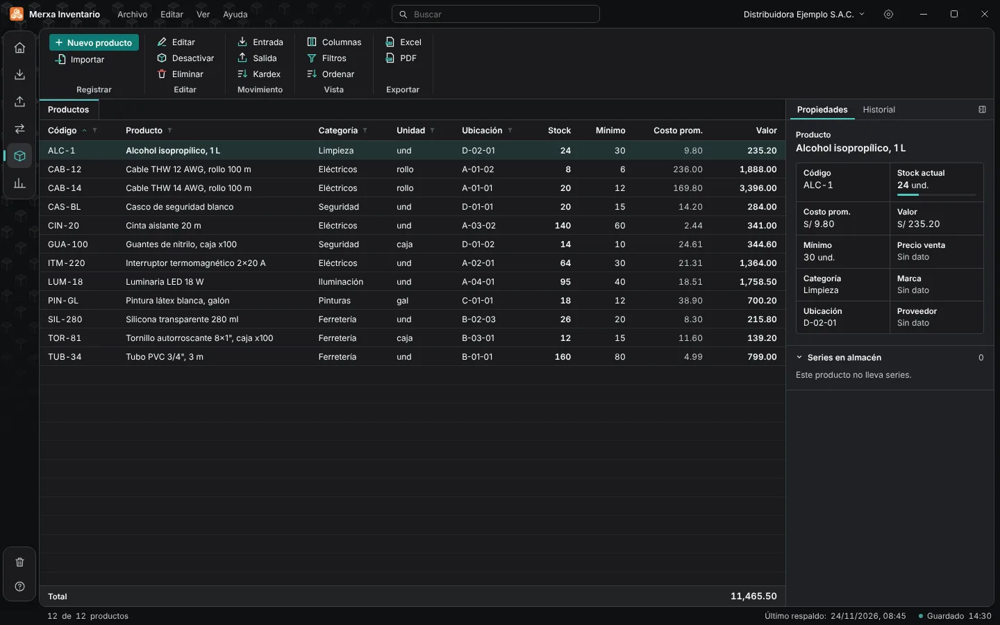
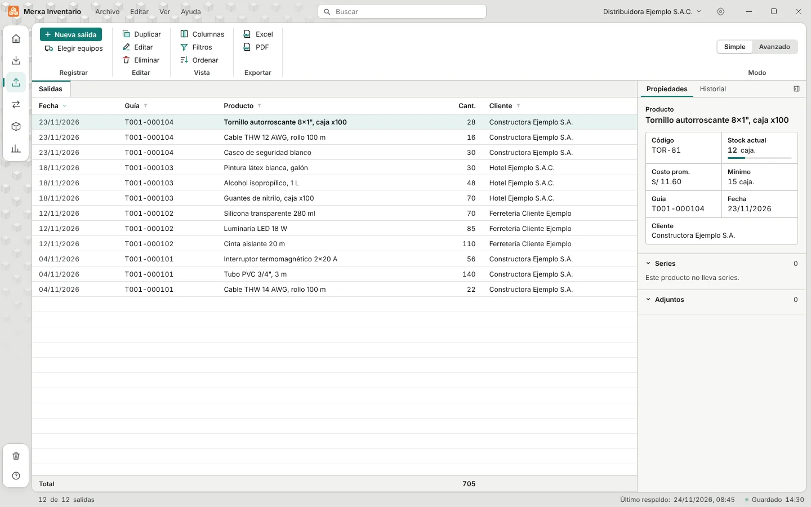

Merxa Inventario es un programa de kardex para Windows que registra entradas, salidas, stock, costo promedio, lotes y series. Se instala en pocos minutos, funciona sin conexión a internet y no requiere cuentas ni suscripciones.

Diseñado para distribuidoras, importadoras y empresas con almacén que compran, almacenan y despachan mercadería. Su interfaz sigue la lógica de los programas de oficina que su equipo ya conoce.
Registro de compras, despachos y ajustes con factura, guía de remisión, proveedor y cliente.
Kardex por producto con costo promedio automático, stock actualizado, stock mínimo y valor total del inventario.
Control de lotes, fechas de vencimiento y números de serie, compatible con lector de código de barras.
Reserva de mercadería por pedido u obra, con despacho por partes. Función opcional, activable desde Opciones.
Kardex por producto, stock actual, movimientos entre fechas y movimientos por proyecto, listos para imprimir o enviar.
Carga de productos e historial desde Excel, con reconocimiento de columnas y revisión previa al registro.


Versión 1.5.0 · Windows 10 y 11 de 64 bits · Gratuito
Se instala para el usuario actual, sin permisos de administrador. Crea el acceso directo en el escritorio y conserva la información al actualizar.
Descargar instalador 78 MBArchivo único que se ejecuta sin instalación. Guarda la información en su misma carpeta, ideal para una unidad USB.
Descargar portable 69 MBPor tratarse de un programa nuevo sin firma digital comercial, Windows puede mostrar el mensaje "Windows protegió su PC". Para continuar:
Descargue el programa únicamente desde esta página para garantizar la versión original.
La instalación implica la aceptación de la licencia de uso. Versiones anteriores: ver todas las versiones.
Es el registro de cada entrada y salida de un producto, con su saldo de unidades y su costo. Permite conocer el stock real y el valor del inventario en cualquier fecha. Merxa Inventario lo genera de forma automática a partir de las entradas y salidas registradas, con el método de costo promedio.
Sí. Su uso es gratuito para fines personales y comerciales, en todos los equipos de su empresa. No requiere tarjeta ni registro.
No. Funciona por completo sin conexión. Si el equipo está conectado, solo verifica la disponibilidad de nuevas versiones. Esta función puede desactivarse en Opciones, sección Acerca de.
En su equipo, en Documentos\Merxa Inventario. La carpeta puede cambiarse desde Opciones. En la versión portable, la información se guarda junto al programa. Merxa no envía su información a ningún servidor.
Al cerrar el programa se guarda un respaldo automático en la carpeta Respaldos, junto a la información. La barra inferior muestra la fecha y hora del último respaldo. Desde Opciones puede elegir otra carpeta, la frecuencia y la cantidad de copias que se conservan.
Sí. En Productos, la opción Importar reconoce las columnas de su kardex en Excel y permite revisar la información antes de registrarla. El kardex por producto también se exporta a Excel y PDF.
Por el momento, solo para Windows 10 y 11 de 64 bits.
Merxa Inventario es la nueva versión de Kardex. Al instalarse, reemplaza a Kardex y conserva la información existente.
Puede escribir a ricardo.escobedo.beraun@gmail.com o utilizar la opción Enviar comentario, en Opciones, sección Acerca de.